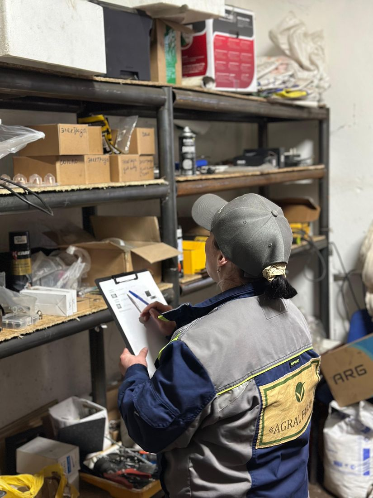

Қора жабдықтары
Ыңғайлы қоршаулар, аралық бөгеттер, қақпалар және т.б. өндіреміз.
Бағасын сұрау →2017 жылдан бері сүт-тауар фермаларына арналған жабдықтың отандық өндірушісіміз. Бүкіл Қазақстан бойынша таңдаймыз, өндіреміз, жеткіземіз, монтаждаймыз және қызмет көрсетеміз.


Біздің мақсатымыз — қолжетімді жабдық шығару: біз отандық өндірушіміз және әр клиентке адалмыз. Сапалы, сенімді және заманауи жабдықты сіздің тапсырысыңыз бойынша жасаймыз.
Ыңғайлы қоршаулар, аралық бөгеттер, қақпалар және т.б. өндіреміз.
Бағасын сұрау →Бұзауларды ұстауға арналған торлар өндіреміз.
Бағасын сұрау →Көң шығаруға арналған скреперлік жүйелер өндіреміз.
Бағасын сұрау →Төлдер мен төлдету бөліміне арналған топтық бокстар өндіреміз.
Бағасын сұрау →Станоктардың түрлі модификацияларын өндіреміз.
Бағасын сұрау →Әр ғимаратқа жеке өндіреміз.
Бағасын сұрау →ІҚМ-ға арналған өздігінен бекітілетін азық торы / хэдлок.
Бағасын сұрау →Жылытылатын топтық суаттар өндіреміз.
Бағасын сұрау →




Сенімді брендтердің техникасын жеткіземіз, сервис, қосалқы бөлшектер және техникалық қолдау көрсетеміз.
Faresin өздігінен жүретін және тіркемелі азық араластырғыш-таратқыштары сапа жағынан да, алатын орны жағынан да мал фермаларының барлық қажеттіліктерін барынша қанағаттандырады.
Толығырақ →Dairymaster сүт фермаларына арналған жоғары технологиялық жабдық өндіруде халықаралық мойындалған: сауу жабдығы, азықтандыру, көңді автоматты скреперлер, сүт салқындату танкілері, жануарлардың денсаулығы мен ұрықтылығын бақылау жүйелері.
Ұсыныс сұрату →
Жануарлардың әл-ауқатын арттыратын инновациялық өнімдер. KRAIBURG — резеңке өнеркәсібінің көшбасшысы.
Ұсыныс сұрату →
Ауыл шаруашылығы мен биогаз қондырғыларына арналған Eisele сорғылары — жоғары сенімділік, ең жоғары сапа және берік құрылымның әлемдік кепілі.
Толығырақ →Ферма тиімділігін арттыруға арналған азықты басқару технологиялары: салмақ өлшеу датчиктері, NIR-анализаторлар, деректер трекерлері және бағдарламалық қамтамасыз ету.
Ұсыныс сұрату →
Әр ферманың қажеттілігіне негізделген бұзауларды мобильді азықтандыру. Alma Pro суару машинасымен бұзауларды тиімді әрі автоматтандырылған өсіру.
Толығырақ →
Барлық азық араластырғыштарға сапалы кескіш пышақтар: Siloking, Kuhn, BVL, Faresin, Triolet, АКМ, КИС және т.б. Әрқашан қоймада бар.
Ұсыныс сұрату →Төрт бөлім жабдықтың уақытында жетуіне және тоқтаусыз жұмыс істеуіне жауап береді.
Сүт және мал фермаларының тиімді жұмысы үшін заманауи жабдықты таңдауға және енгізуге көмектеседі.
Үздіксіз жұмыс пен жобаларды іске асыру үшін жабдықты, бөлшектер мен материалдарды уақытылы жеткізуді қамтамасыз етеді.
Мерзімдер мен бағыттарды бақылай отырып, жабдық пен материалдарды нысандарға жеткізуді ұйымдастырады.
Ферманың үздіксіз жұмысы үшін жабдықты монтаждауды, техникалық қызмет көрсетуді және жедел қолдауды қамтамасыз етеді.

Фермаға не қажет екенін айтыңыз — жабдықты таңдап, ұсыныс жібереміз.